0. Getting Started
Getting Started Demo
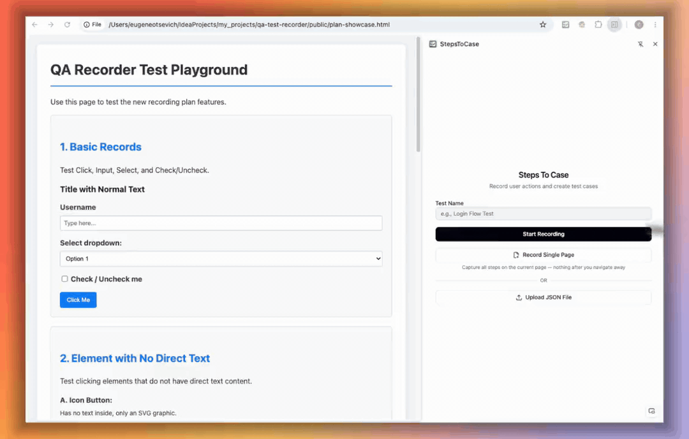
Install & Open
- Install StepsToCase from the Chrome Web Store and pin it to the toolbar.
- Open the site you want to test, then click the extension icon. The side panel opens on the right.
- Need more room? Use the window toggle in the panel header to move the panel into a separate picture-in-picture window, and back.
The Start Screen
- Test name and description: they go into the export and the generated test case.
- Start Recording: records a full flow across pages (see section 2).
- Record Single Page: collects steps for one page only, to build a page object (see section 2).
- Upload JSON File: opens a recording you exported earlier, so you can keep editing it.
0. Початок роботи
Відеодемонстрація: Початок роботи
Встановлення та запуск
- Встановіть StepsToCase з Chrome Web Store і закріпіть його на панелі інструментів.
- Відкрийте сайт, який тестуєте, і натисніть на іконку розширення. Праворуч відкриється бокова панель.
- Бракує місця? Кнопка у шапці панелі переносить її в окреме вікно «картинка в картинці» і назад.
Стартовий екран
- Назва та опис тесту: потрапляють в експорт і в згенерований тесткейс.
- Start Recording: записує повний сценарій через кілька сторінок (див. розділ 2).
- Record Single Page: збирає кроки лише однієї сторінки для побудови Page Object (див. розділ 2).
- Upload JSON File: відкриває раніше експортований запис, щоб продовжити його редагування.
1. Introduction & Core Philosophy
Why It Was Built
This tool solves three main problems in software testing:
1. The "Ignored Test Case" Problem
Teams often write manual test cases only to check a box. People write them too fast in vague words. After one month, nobody knows what the test means. New team members get confused by unclear project words.
Steps to Case solves this with Executable Specifications. Executable specifications are exact step-by-step records of user actions. Each action maps directly into automated code.
2. The High Cost of Testing
Teams run one test case many times: exploratory tests, bug fix checks, regression tests, and automation learning.
With Steps to Case, your first manual test captures automation data as a byproduct. This improves your ROI (Return on Investment. The profit gained compared to money spent). Every next run saves time.
3. High Entry Barrier to Automation
Writing application code with AI (Artificial Intelligence. Computers that generate text or code) can be risky. Writing test code with AI is safer. Tests give a fast feedback loop. If the test passes, the code works. If the test fails, the code is broken.
The "Golden Mean" Philosophy (Video Insight)
The tool acts as the golden mean between two weak approaches:
[Autonomous Browser Agent] <----- [ Steps to Case ] -----> [ Vague 5-Line Prompt ]
(Gets lost, slow, breaks) (The Golden Mean) (Hallucinates locators)- Approach A (Autonomous AI Agents): The agent explores pages by itself. It gets lost on complex screens, wastes tokens, and breaks easily.
- Approach B (Vague Five-Line Prompts): The user writes five short lines. The AI guesses DOM selectors. The test fails immediately. DOM means Document Object Model. This is the tree layout of web page elements.
- The Steps to Case Approach: A human performs the exact path. The extension records exact DOM attributes and relationships. The AI uses this data to write solid code.
The payoff of this approach is the generate → run → heal loop in section 6: because a human already proved the path works, the AI can fix its own generated test without supervision.
1. Вступ та головна філософія
Навіщо це створено
Додаток вирішує три головні проблеми тестування:
1. Проблема "забутого тесткейсу"
Тесткейси часто пишуть поспіхом, лише для галочки. Вони написані надто абстрактно. Через місяць ніхто не може зрозуміти, що цей тест робить і як його пройти. Нові люди в команді не знають внутрішнього сленгу проєкту.
Steps to Case вирішує це через Виконувані Специфікації (Executable Specifications). Це точний покроковий запис дій, який напряму стає автоматизованим кодом.
2. Висока вартість тестування
Один тесткейс проходять кілька разів: перший тест, перевірка після виправлення багів, регресійне тестування та написання автотесту.
З Steps to Case дані для автоматизації збираються одразу як побічний результат ручного проходження. Це суттєво підвищує ROI (Return on Investment. Показник окупності витрат). Кожен наступний запуск економить час.
3. Високий поріг входу в автоматизацію
Писати код додатку за допомогою AI (Artificial Intelligence. Штучний інтелект) буває ризиковано. Писати тестовий код за допомогою AI набагато безпечніше. Тести дають швидку перевірку: зелений тест означає, що все працює, червоний — що є помилка.
Філософія "Золотої середини" (Інсайт з відео)
Інструмент виступає золотою серединою між двома крайнощами:
[Автономний AI-агент] <----- [ Steps to Case ] -----> [ Короткий промпт на 5 рядків ]
(Губиться, повільний) (Золота середина) (Вигадує локатори наосліп)- Підхід А (Повні автономні AI-агенти): Агент керує браузером самостійно. Він блукає сторінками, застрягає на складних інтерфейсах і витрачає багато токенів.
- Підхід Б (Абстрактні промпти на 5 рядків): Інженер пише 5 загальних слів і просить AI згенерувати код. AI не знає DOM сторінки і вгадує селектори. DOM означає Document Object Model. Це дерево всіх елементів веб-сторінки. Тест одразу ламається.
- Підхід Steps to Case: Людина сама проходить потрібний бізнес-сценарій. Розширення зберігає точні дані DOM та зв'язки між елементами. AI використовує ці факти і пише надійний код.
Головна вигода цього підходу — цикл генерація → запуск → лікування з розділу 6: людина вже довела, що сценарій працює, тож AI може сам виправляти згенерований тест без нагляду.
2. Recording & Capturing Actions
Live Action Recording Demo
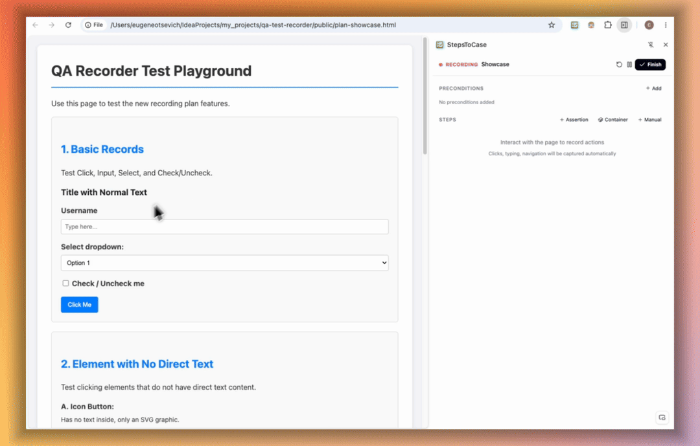
How the Recorder Works
Click Start Recording. The extension monitors browser actions. It captures user intent instead of raw clicks:
- Mimicking User Intent: Humans click an input field to focus it, then type. The tool optimizes this into one
fillaction. - Predefined Vocabulary: The extension uses strict action words:
click,double click,fill,press(keys such as Enter, Tab, Escape),select,check,uncheck, andnavigate. - Noise Filtering: A click on a checkbox becomes one
checkstep, not a click plus a check. Synthetic clicks that the page fires by itself are ignored, so only real user actions are recorded. - Password Masking: Values typed into password fields are shown and exported as
••••••••.
Pause, Continue & Reset
- Pause: stop capturing for a moment (for example, to prepare data in another tab), then Continue.
- Reset: discards the current recording after a confirmation.
- The recording survives browser and extension restarts, because it is saved locally.
Pages, Tabs & Frames
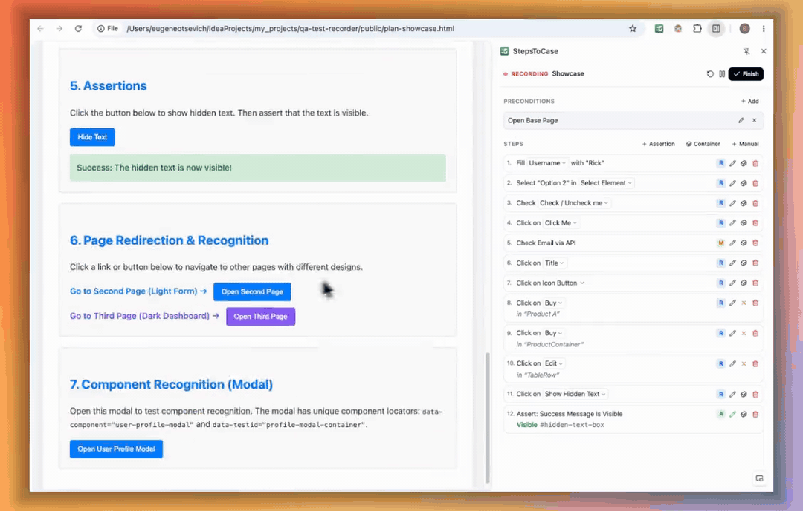
- Automatic pages: steps are grouped into pages by URL path. Hash routes (
#/users) count as separate pages. Query strings and plain anchors are ignored. - Popups and new tabs: tabs opened from the recorded tab (login popups,
target=_blanklinks) are recorded too. Other tabs are ignored. - Iframes: actions inside iframes are captured. The export marks them with
frameUrl. - Network requests: for each step, the backend API calls it triggered are saved (scripts, images and fonts are filtered out). They help the AI add proper waits.
Record Single Page Mode
Use Record Single Page when you want to describe one page, not a whole flow: for example, to build or extend a page object. It records actions, assertions and manual steps on the current page only. Steps captured after navigating away are dropped. The export is a flat list of steps for that page, with element attributes and containers.
Four Step Types Demo
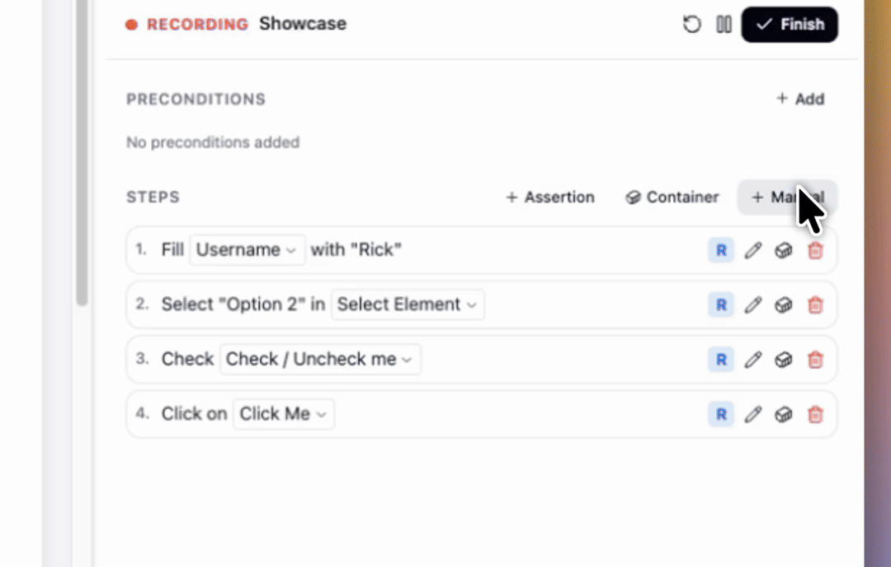
| Step Type | Description | Best Use Case |
|---|---|---|
| Automatic Steps | Recorded directly from browser clicks and typing. | Normal on-screen user actions. |
| Manual Steps | Hand-crafted placeholder steps. | Actions outside the web browser (e.g. mobile push, SMS, backend query). |
| Verifications | Assertion steps (checks on screen values). | Verifying UI state or data text. |
| Preconditions | Setup steps executed before the main test flow. | Login, backend API prep, or database seeding. |
2. Запис та збереження дій користувача
Відеодемонстрація: Запис дій наживо
Як працює рекордер дій
Натисніть Start Recording. Розширення фіксує всі маніпуляції у браузері, зберігаючи реальний намір користувача:
- Фіксація наміру: Людина спочатку клікає на поле, щоб активувати його, а потім вводить текст. Розширення оптимізує це в одну дію
fill(заповнення поля). - Чіткий словник дій: Використовуються стандартні типи дій:
click,double click,fill,press(клавіші Enter, Tab, Escape),select,check,uncheckтаnavigate. - Фільтр шуму: Клік на чекбокс записується одним кроком
check, а не кліком плюс check. Синтетичні кліки, які сторінка генерує сама, ігноруються — записуються лише реальні дії користувача. - Маскування паролів: Значення з полів пароля показуються та експортуються як
••••••••.
Пауза, продовження та скидання
- Pause: тимчасово зупиняє запис (наприклад, щоб підготувати дані в іншій вкладці), потім натисніть Continue.
- Reset: видаляє поточний запис після підтвердження.
- Запис переживає перезапуск браузера та розширення, бо зберігається локально.
Сторінки, вкладки та фрейми
- Автоматичні сторінки: кроки групуються у сторінки за шляхом URL. Hash-маршрути (
#/users) вважаються окремими сторінками. Параметри запиту та звичайні якорі ігноруються. - Спливаючі вікна та нові вкладки: вкладки, відкриті із записуваної (вікно логіну, посилання
target=_blank), теж записуються. Інші вкладки ігноруються. - Iframe: дії всередині фреймів записуються. В експорті вони позначені полем
frameUrl. - Мережеві запити: для кожного кроку зберігаються викликані ним API-запити (скрипти, картинки та шрифти відфільтровано). Це допомагає AI додати правильні очікування.
Режим Record Single Page
Використовуйте Record Single Page, коли потрібно описати одну сторінку, а не весь сценарій: наприклад, щоб створити або доповнити Page Object. Режим записує дії, перевірки та мануальні кроки лише на поточній сторінці. Кроки після переходу на іншу сторінку відкидаються. Експорт — це плаский список кроків цієї сторінки з атрибутами елементів і контейнерами.
Відеодемонстрація: Чотири типи кроків
| Тип кроку | Опис | Коли використовувати |
|---|---|---|
| Автоматичні кроки | Записуються напряму з дій користувача у вікні браузера. | Звичайні кліки, введення тексту та вибір опцій. |
| Мануальні кроки | Кроки-заглушки для дій поза межами браузера. | Перевірка SMS, пуш-повідомлень або запит до бази даних. |
| Перевірки | Кроки перевірки значень та стану екрана. | Перевірка видимого тексту чи повідомлень про помилку. |
| Прекондішни | Підготовчі дії (Preconditions), які виконуються до тесту. | Авторизація, підготовка тестових даних через API або БД. |
3. Assertions & Containers
Containers & Hierarchy Navigation Demo
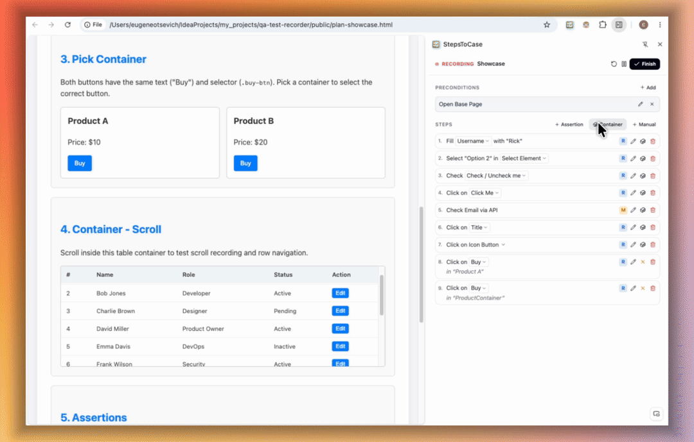
Handling Non-Unique Elements
Web pages often contain duplicate elements (like ten "Edit" buttons in a list). A human understands row context, but automated tests need exact locators. A locator is a code string that points to an element on a web page.
Containers solve this problem. The tool first locates the container (like John's table row), then searches for the button only inside that container.
Two Ways to Bind Containers
- Pre-Action Container: Set container mode before you click the target element. This is vital for dismissible elements. A dismissible element is a popup modal or menu that disappears the moment you click inside it.
- Post-Action Container: Link a container to an existing step in your recorded list retroactively.
Picking a Container, Step by Step
- Before the action: click + Container in the Steps header, pick the area on the page, give it a name, then perform the action. The container is attached to the next recorded step.
- After the action: click the cube icon on a step. The tool highlights the recorded element, so you can move up to the right parent and click it.
- A step with a container shows a Remove container button instead.
- Press Esc at any time to cancel picking.
Keyboard and Scroll DOM Navigation
Selecting an exact structural container (like a table row <tr>) with a mouse can be difficult.
The tool provides DOM Level Traversal: Hover your mouse over the element and scroll the mouse wheel or press the Up / Down arrow keys. This moves the highlight up or down through the element tree level by level.
Verifications & Assertions Demo
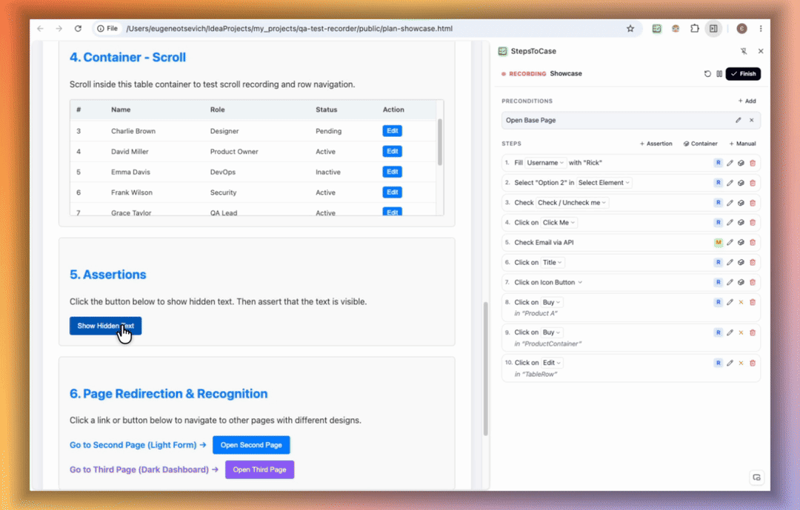
Creating Assertions and Verifications
- Click + Assertion and select an element on the screen. The element is optional.
- Choose the check type:
text equals,text contains,visible,hidden,enabled,disabled,checked, orunchecked. - Text Expectation Fallback: If the element is not currently in the DOM, type the expected result by hand. It is exported as an assertion without an element.
- Container Wrapping: Wrap verification elements inside a container to guarantee uniqueness.
- Edit later: click the pencil icon on an assertion to change its type, value or element.
3. Перевірки та Контейнери
Відеодемонстрація: Робота з контейнерами та навігація
Робота з однаковими елементами
У таблицях часто є багато однакових кнопок (наприклад, 10 кнопок "Редагувати"). Людина бачить рядок потрібного користувача, але автотесту потрібен точний локатор. Локатор — це рядок коду, який знаходить потрібний елемент на сторінці.
Контейнери вирішують цю проблему. Інструмент спочатку знаходить контейнер (наприклад, рядок користувача Івана), а потім шукає кнопку тільки всередині цього рядка.
Два способи прив'язки контейнера
- До натискання (Pre-Action): Увімкніть вибір контейнера перед натисканням на елемент. Це необхідно для елементів, які зникають після кліку (наприклад, спливаючі списки чи модальні вікна).
- Після запису (Post-Action): Контейнер можна прив'язати до будь-якого раніше записаного кроку в списку.
Вибір контейнера крок за кроком
- До дії: натисніть + Container у заголовку Steps, виберіть область на сторінці, дайте їй назву і виконайте дію. Контейнер прив'яжеться до наступного записаного кроку.
- Після дії: натисніть іконку куба на кроці. Інструмент підсвітить записаний елемент, щоб ви піднялися до потрібного батьківського блоку і клікнули на нього.
- На кроці з контейнером замість цього з'являється кнопка Remove container.
- Натисніть Esc, щоб скасувати вибір у будь-який момент.
Навігація деревом DOM стрілками та скролом
Вибрати рядок таблиці <tr> курсором буває важко, бо кнопки всередині закривають його.
Додаток підтримує покроковий вибір рівня: наведіть мишку на кнопку та покрутіть колесо або натискайте стрілки Вгору / Вниз на клавіатурі. Виділення перейде на рядок таблиці, не перескакуючи на всю таблицю.
Відеодемонстрація: Створення перевірок
Як створити перевірку
- Натисніть + Assertion і виберіть елемент на екрані. Елемент не обов'язковий.
- Виберіть тип перевірки:
text equals,text contains,visible,hidden,enabled,disabled,checkedабоunchecked. - Запасний варіант очікуваного тексту: Якщо елемента ще немає на екрані, напишіть очікуваний результат вручну. Він експортується як перевірка без елемента.
- Обгортання контейнером: Перевірку можна обгорнути контейнером для повної унікальності.
- Редагування: натисніть іконку олівця на перевірці, щоб змінити її тип, значення чи елемент.
4. Organizing & Editing
Smart Step Naming Demo
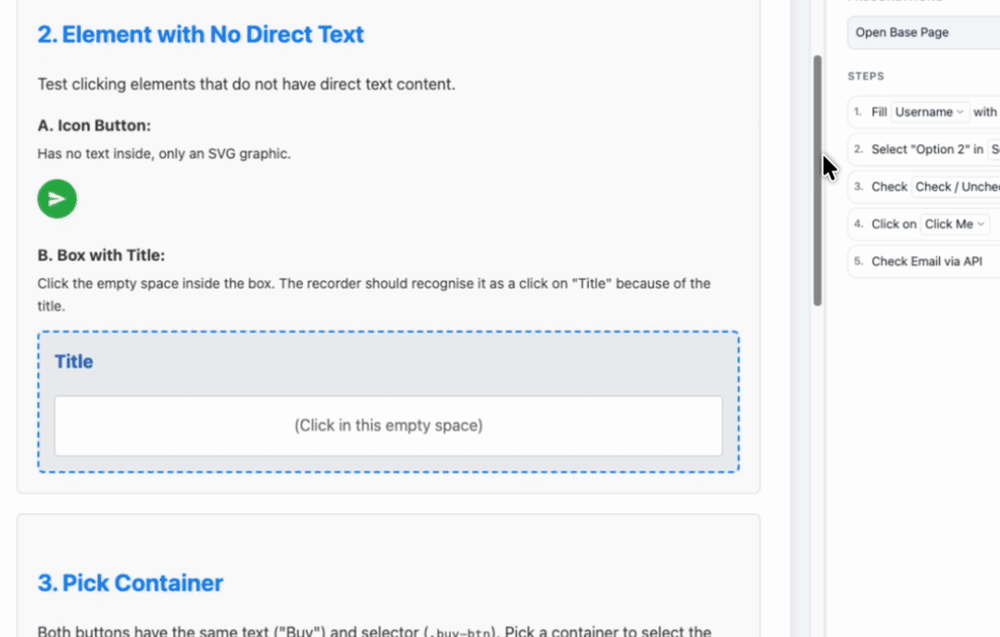
Smart Naming Extraction
Buttons contain text inside them, but input fields do not. Their labels live in parent divisions or nearby headings.
The tool climbs upward through the DOM tree, inspects parent labels, checks configured priority attributes, and presents recommended names. Users can select a suggestion or type a custom name.
Step Editing & Merging Demo
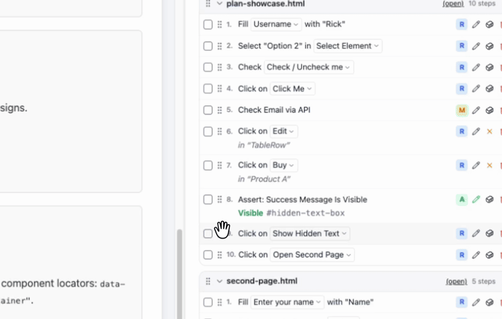
Step Editing Features
- Rearrange Steps: Drag and drop steps to fix execution sequence.
- Delete Accidental Clicks: Remove misclicks without re-recording.
- Rename Steps: Click the step name to pick another suggested description (the Description Picker), or click the pencil to type your own text.
- Add Missing Steps: Insert manual steps, verifications, or preconditions.
- Step Composition (Step Merging): Combine multiple technical clicks into one logical step (e.g., expanding a custom dropdown and picking an option merges into "Select user role").
Composite Steps
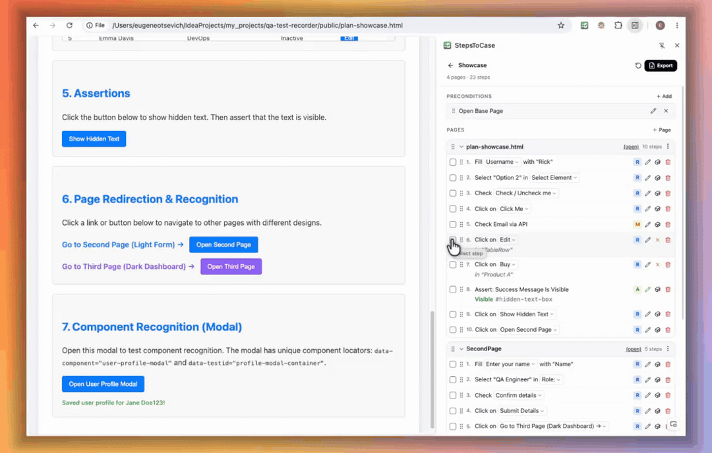
- Select several steps and click Create Composite Step. Give it a business name.
- Inside a composite step you can rename it, reorder or delete its sub-steps, and add manual sub-steps.
- In the export, a composite becomes a
SUBGROUP. The AI turns it into one page object method.
Preconditions & Pages
- Preconditions: add, edit, delete, and drag to reorder them in the Preconditions section.
- Pages: create a page by hand, rename it (double-click), drag pages to change the order, and use More actions for the rest. You can also remove a manual step grouping.
- Back to recording: return from review to the recorder to capture more steps.
4. Організація та Редагування кроків
Відеодемонстрація: Розумне визначення назв кроків
Як працює розумне найменування
Кнопки мають текст всередині, але поля введення часто безіменні. Їхній опис знаходиться поруч у заголовках чи батьківських блоках.
Розширення піднімається вгору по дереву DOM, перевіряє атрибути у заданому порядку пріоритетів і пропонує список вдалий назв. Ви можете вибрати варіант зі списку або ввести власну назву.
Відеодемонстрація: Редагування та об'єднання кроків
Можливості редагування
- Зміна порядку: Перетягуйте кроки мишкою для потрібної послідовності.
- Видалення зайвого: Видаляйте випадкові кліки на пусті місця.
- Перейменування кроків: Натисніть на назву кроку, щоб вибрати інший запропонований опис (Description Picker), або на олівець, щоб написати власний текст.
- Додавання кроків: Вставляйте мануальні кроки, перевірки або прекондішни.
- Об'єднання кроків (Step Merging): Поєднуйте кілька кліків в одну бізнес-дію (наприклад, відкриття меню і вибір пункту об'єднуються у "Вибрати роль користувача").
Складені кроки
- Виділіть кілька кроків і натисніть Create Composite Step. Дайте йому бізнес-назву.
- Усередині складеного кроку можна змінити назву, порядок чи видалити підкроки, а також додати мануальні підкроки.
- В експорті складений крок стає
SUBGROUP. AI перетворює його на один метод Page Object.
Передумови та сторінки
- Передумови: додавайте, редагуйте, видаляйте та перетягуйте їх у розділі Preconditions.
- Сторінки: створюйте сторінку вручну, перейменовуйте (подвійний клік), перетягуйте для зміни порядку, решта дій — у меню More actions. Також можна прибрати ручне групування кроків.
- Повернення до запису: з екрану перегляду можна повернутися до рекордера і дописати кроки.
5. Exporting Content
Final Exported Artifacts Demo
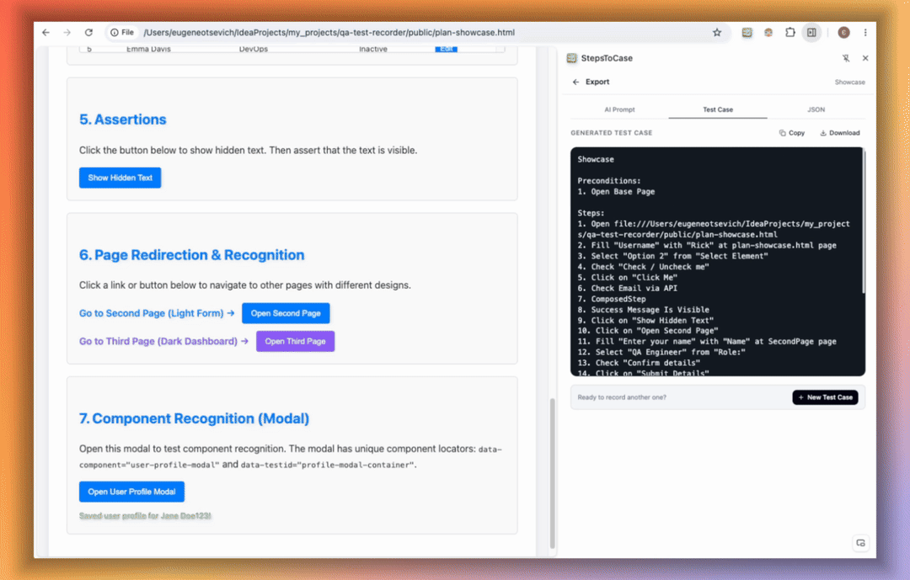
The Three Export Tabs
- AI Prompt: Recorded steps can read like robot commands. The export screen gives you an AI prompt template, already filled with your recording. Copy it into any LLM (Large Language Model. An AI system that generates text and code) to polish steps into natural business language for Jira, TestRail, or Notion. Use Copy Filled, Download, or Save to keep your edited prompt as the new template.
- Test Case: A readable test case generated right in the extension, with no LLM needed. Copy or download it.
- JSON: JSON means JavaScript Object Notation. This is a text format for structured data. The JSON file holds pages, steps, element attributes, accessible names, containers, iframes and triggered requests. Pass it to an AI coding agent to generate test code for Playwright, Cypress, or Selenium without guessing selectors. See section 6 for how to do it in your own framework.
What the JSON Looks Like
{
"testName": "Edit infobox title",
"baseUrl": "https://staging.example.com",
"startUrl": "/handbook",
"preconditions": ["User is logged in as editor"],
"pages": [{
"pageName": "edit", "pageUrl": "/handbook/319368/edit", "pageTag": "new-layout",
"steps": [{
"stepOrder": 6, "stepType": "RECORDED", "actionKind": "action",
"actionName": "Fill Title", "actionValue": "New title",
"elementTag": "input", "elementLabel": "Title",
"elementAttributes": { "name": "infobox_item_title" },
"containerLabel": "Content", "containerHtml": "<div class=\"tab-content\">...",
"triggeredRequests": [{ "method": "PUT", "url": "/api/infobox/319368", "status": 200 }]
}]
}]
}Step types: RECORDED, MANUAL, ASSERTION_WITH_ELEMENT, ASSERTION_WITHOUT_ELEMENT, COMBINED, and SUBGROUP. Run steps in ascending stepOrder across all pages.
Import a Recording
A downloaded JSON is also a save file. Use Upload JSON File on the start screen to open it again and keep editing.
5. Експорт тестів та JSON-контексту
Відеодемонстрація: Фінальні артефакти
Три вкладки експорту
- AI Prompt: Записані кроки спочатку виглядають дещо механічно. Екран експорту надає шаблон AI-промпту, вже заповнений вашим записом. Вставте його в будь-яку модель (ChatGPT, Claude, Gemini), щоб отримати живий та зрозумілий опис для Jira, TestRail або Notion. Кнопки Copy Filled, Download та Save (зберегти відредагований промпт як новий шаблон).
- Test Case: Зрозумілий тесткейс, згенерований прямо в розширенні, без жодної LLM. Його можна скопіювати або завантажити.
- JSON: JSON (JavaScript Object Notation) — це текстовий формат структурованих даних. Файл зберігає сторінки, кроки, атрибути елементів, доступні назви, контейнери, фрейми та викликані запити. Передайте його агенту, щоб він написав автотести для Playwright, Cypress чи Selenium без вгадування селекторів. Як зробити це у вашому фреймворку — див. розділ 6.
Як виглядає JSON
{
"testName": "Edit infobox title",
"baseUrl": "https://staging.example.com",
"startUrl": "/handbook",
"preconditions": ["User is logged in as editor"],
"pages": [{
"pageName": "edit", "pageUrl": "/handbook/319368/edit", "pageTag": "new-layout",
"steps": [{
"stepOrder": 6, "stepType": "RECORDED", "actionKind": "action",
"actionName": "Fill Title", "actionValue": "New title",
"elementTag": "input", "elementLabel": "Title",
"elementAttributes": { "name": "infobox_item_title" },
"containerLabel": "Content", "containerHtml": "<div class=\"tab-content\">...",
"triggeredRequests": [{ "method": "PUT", "url": "/api/infobox/319368", "status": 200 }]
}]
}]
}Типи кроків: RECORDED, MANUAL, ASSERTION_WITH_ELEMENT, ASSERTION_WITHOUT_ELEMENT, COMBINED та SUBGROUP. Кроки виконуються за зростанням stepOrder через усі сторінки.
Імпорт запису
Завантажений JSON — це також файл збереження. Кнопка Upload JSON File на стартовому екрані відкриває його знову для редагування.
6. From JSON to Automation Code (for engineers)
Why a Command, Not a One-Off Prompt
The export prompt is generic. Your project is not: it has its own folder layout, page objects, fixtures, naming, locator policy and helpers. Write those rules once, as a command for your AI coding agent (Claude Code .claude/commands/, Cursor rules, Copilot instructions). Every recording then becomes code that looks hand-written by your team.
What the Command Should Contain
- Where code lives: test folder, page object folder, component folder, file naming.
- Framework rules: base classes, fixtures, login helper, test data factories, tagging.
- Locator policy: for example,
data-testidfirst, then role and accessible name, never XPath ornth-childunless nothing else works. - How to read the JSON:
- Run steps in ascending
stepOrderacross all pages. pageName/pageTag→ page object class.componentTag→ shared component class (header, modal).containerHtml/containerLabel→ scope the locator inside its container.frameUrl→ frame locator.triggeredRequests→ wait for that response, not a fixed sleep.ASSERTION_*→ assertions.SUBGROUP→ one page object method named after the group.MANUAL→ a TODO comment or an existing helper, never invented UI clicks.
- Run steps in ascending
- Reuse first: search the repo for existing page objects, methods and helpers before writing new ones. Never build preconditions from scratch (see the rule in section 2).
Real-world example: .claude/commands/generate-test.md
This is the structure of a command used on a real project (Java + Playwright + JUnit). Team-specific details are replaced with [YOUR: …] placeholders. Fill them in once, and paste your own class templates at the end.
---
model: sonnet # any capable coding model
---
# Generate an automated test from a Steps to Case recording
Input: the recording JSON at $ARGUMENTS. Treat it as the source of truth.
Goal: stable, non-flaky page objects and one test class that reuse what already exists.
## Project context (fill in once for your team)
- Language / framework: [YOUR: e.g. Java + Playwright + JUnit 5]
- Page object base class: [YOUR: e.g. BasePlaywrightPage]
- Test base class: [YOUR: e.g. BasePlaywrightTest with open(url)]
- How tests reach pages: [YOUR: e.g. app.loginPage().clickSignIn()]
- File placement: [YOUR: folders for pages, components, tests]
- pageTag mapping: [YOUR: e.g. newdesign -> pages/newdesign + NewDesignApp]
- Precondition helpers: [YOUR: login fixture, API data factories]
## Step 1. Page objects (one page at a time)
1. Class name from `pageName` (PascalCase + "Page"). `pageTag` picks the package and
the App class. Elements with `componentTag` go to that component class instead.
2. If the class exists, add to it and keep its style. Otherwise create it.
3. Before adding a method, look for one that already does this step. Reuse it.
## Step 2. One method per step, by stepType
- RECORDED: action method. `actionKind` is the verb (click, fill, press, select,
check, uncheck, dblclick, navigate). `actionValue` is the text, key or option.
- ASSERTION_WITH_ELEMENT: assertion from `assertElementType` and the
`assertElement*` fields. The expected text is `actionValue`.
- ASSERTION_WITHOUT_ELEMENT, MANUAL, MANUAL_WITHOUT_ELEMENT: empty method named
from `actionName`, with a TODO. Never invent UI actions for them.
- SUBGROUP: ONE method named from `actionName`. Its body runs the nested `steps`
with the same rules.
- COMBINED: one method. `comment` items inside it label the sub-actions after them.
## Locators
Build them from the element fields, best first:
[YOUR: test attribute, e.g. data-testid] -> `elementAttributes` (id, name, data-*)
-> role + `elementAccessibleName` -> `elementLabel` / `elementPlaceholder` -> text.
- `containerHtml` / `containerLabel` present: locate the container first, then the
element inside it (table rows, cards, dialogs, repeated buttons).
- `frameUrl` present: go through that frame first.
- No XPath, no nth-child, unless nothing else is unique.
- Field only if used in 2+ methods; local variable if used twice in one method;
otherwise inline.
## Naming
- Action: verb + noun, e.g. fillUsername(value), clickSignIn()
- Assertion: assert + noun + state, e.g. assertWelcomeVisible()
- Name source: `actionName` -> `elementAccessibleName` -> `elementLabel` ->
`elementAriaLabel` -> `elementInnerText` (3-4 words) -> `elementPlaceholder`.
- Drop filler words (button, input, field, link) unless that makes it ambiguous.
## Assertion mapping
visible -> isVisible | hidden -> isHidden | enabled / disabled | checked / unchecked
text_equals -> hasText(actionValue) | text_contains -> containsText(actionValue)
## Waits
- `triggeredRequests`: after the action, wait for that response (method + URL).
- `triggeredNavigationUrl`: wait for that URL. No fixed sleeps.
## Step 3. Test class
- Name from `testName` (PascalCase + "Test"), one test method.
- Preconditions: call existing helpers, or write `// Precondition: <text>`.
Never build them from scratch.
- Start with open(`baseUrl` + `startUrl`).
- Sort ALL steps by `stepOrder` across pages (a page visited twice lists its steps
together), then make one page object call per step through [YOUR: App class].
- No raw locators in the test class.
## Templates
[YOUR: paste your page object, App registration and test class skeletons here]
## Checklist before finishing
- [ ] Every step is exactly one method call, in stepOrder
- [ ] Existing classes and methods reused; new pages registered in the App class
- [ ] Locators scoped by container / frame wherever the JSON has one
- [ ] Code compiles, all imports present
- [ ] Return a map of step actionName -> method call (the heal loop uses it)Best Practice: The Generate → Run → Heal Loop
A recording is made during a run that passed: a person walked the flow and the app behaved as expected. So if the generated test fails on the same build and environment, the cause is almost never the product. It is the conversion from recording to code: a weak locator, a missing wait, an iframe, a cookie banner, or a step the recorder did not capture (a hover, a scroll, a focus change).
That makes healing safe to hand to the agent. It knows the expected end state, so it can keep fixing how the test gets there until it passes, with no engineer in the loop.
Example: .claude/commands/generate-and-heal.md
1. Run /generate-test on $ARGUMENTS.
2. Run only that test. If it passes, stop.
3. If it fails, read the error, trace and screenshot, find the cause, apply the smallest
fix, and go back to step 2. At most 5 attempts.
Allowed fixes: locators (rebuild from elementAttributes, accessible name, label and
containerHtml), waits (prefer triggeredRequests responses), frame handling, missing
implicit steps (hover, scroll, dismiss overlay), dynamic test data.
Never: change an expected value, remove, skip or weaken an assertion, delete a recorded
step, add force:true, raise global timeouts, or wrap steps in try/catch.
Stop and report (do not "fix") when: the same failure repeats after a fix; the only way
to pass is changing an assertion; or the app behaves differently from the recording.
Those are signs of a real change or bug, not a capture problem.[YOUR: …], and the class names in the examples, belong to one team's project. Replace them with your own base classes, folders and helpers.
6. Від JSON до автотестів (для інженерів)
Чому команда, а не разовий промпт
Промпт експорту універсальний. Ваш проєкт — ні: у нього своя структура папок, Page Object, фікстури, найменування, політика локаторів і хелпери. Опишіть ці правила один раз як команду для вашого AI-агента (Claude Code .claude/commands/, правила Cursor, інструкції Copilot). Тоді кожен запис перетворюється на код, ніби написаний вашою командою вручну.
Що має містити команда
- Де лежить код: папка тестів, папка Page Object, папка компонентів, правила назв файлів.
- Правила фреймворку: базові класи, фікстури, хелпер логіну, фабрики тестових даних, теги.
- Політика локаторів: наприклад, спочатку
data-testid, потім роль і доступна назва, ніколи XPath чиnth-child, якщо є інший варіант. - Як читати JSON:
- Виконувати кроки за зростанням
stepOrderчерез усі сторінки. pageName/pageTag→ клас Page Object.componentTag→ клас спільного компонента (шапка, модальне вікно).containerHtml/containerLabel→ обмежити локатор його контейнером.frameUrl→ frame locator.triggeredRequests→ чекати на відповідь цього запиту, а не фіксовану паузу.ASSERTION_*→ перевірки.SUBGROUP→ один метод Page Object з назвою групи.MANUAL→ TODO-коментар або існуючий хелпер, ніколи не вигадані кліки.
- Виконувати кроки за зростанням
- Спочатку перевикористання: перед написанням нового коду шукати в репозиторії існуючі Page Object, методи та хелпери. Ніколи не створювати передумови з нуля (див. правило в розділі 2).
Приклад з реального проєкту: .claude/commands/generate-test.md
Це структура команди з реального проєкту (Java + Playwright + JUnit). Деталі конкретної команди замінено заглушками [YOUR: …]. Заповніть їх один раз і вставте в кінці шаблони власних класів.
---
model: sonnet # any capable coding model
---
# Generate an automated test from a Steps to Case recording
Input: the recording JSON at $ARGUMENTS. Treat it as the source of truth.
Goal: stable, non-flaky page objects and one test class that reuse what already exists.
## Project context (fill in once for your team)
- Language / framework: [YOUR: e.g. Java + Playwright + JUnit 5]
- Page object base class: [YOUR: e.g. BasePlaywrightPage]
- Test base class: [YOUR: e.g. BasePlaywrightTest with open(url)]
- How tests reach pages: [YOUR: e.g. app.loginPage().clickSignIn()]
- File placement: [YOUR: folders for pages, components, tests]
- pageTag mapping: [YOUR: e.g. newdesign -> pages/newdesign + NewDesignApp]
- Precondition helpers: [YOUR: login fixture, API data factories]
## Step 1. Page objects (one page at a time)
1. Class name from `pageName` (PascalCase + "Page"). `pageTag` picks the package and
the App class. Elements with `componentTag` go to that component class instead.
2. If the class exists, add to it and keep its style. Otherwise create it.
3. Before adding a method, look for one that already does this step. Reuse it.
## Step 2. One method per step, by stepType
- RECORDED: action method. `actionKind` is the verb (click, fill, press, select,
check, uncheck, dblclick, navigate). `actionValue` is the text, key or option.
- ASSERTION_WITH_ELEMENT: assertion from `assertElementType` and the
`assertElement*` fields. The expected text is `actionValue`.
- ASSERTION_WITHOUT_ELEMENT, MANUAL, MANUAL_WITHOUT_ELEMENT: empty method named
from `actionName`, with a TODO. Never invent UI actions for them.
- SUBGROUP: ONE method named from `actionName`. Its body runs the nested `steps`
with the same rules.
- COMBINED: one method. `comment` items inside it label the sub-actions after them.
## Locators
Build them from the element fields, best first:
[YOUR: test attribute, e.g. data-testid] -> `elementAttributes` (id, name, data-*)
-> role + `elementAccessibleName` -> `elementLabel` / `elementPlaceholder` -> text.
- `containerHtml` / `containerLabel` present: locate the container first, then the
element inside it (table rows, cards, dialogs, repeated buttons).
- `frameUrl` present: go through that frame first.
- No XPath, no nth-child, unless nothing else is unique.
- Field only if used in 2+ methods; local variable if used twice in one method;
otherwise inline.
## Naming
- Action: verb + noun, e.g. fillUsername(value), clickSignIn()
- Assertion: assert + noun + state, e.g. assertWelcomeVisible()
- Name source: `actionName` -> `elementAccessibleName` -> `elementLabel` ->
`elementAriaLabel` -> `elementInnerText` (3-4 words) -> `elementPlaceholder`.
- Drop filler words (button, input, field, link) unless that makes it ambiguous.
## Assertion mapping
visible -> isVisible | hidden -> isHidden | enabled / disabled | checked / unchecked
text_equals -> hasText(actionValue) | text_contains -> containsText(actionValue)
## Waits
- `triggeredRequests`: after the action, wait for that response (method + URL).
- `triggeredNavigationUrl`: wait for that URL. No fixed sleeps.
## Step 3. Test class
- Name from `testName` (PascalCase + "Test"), one test method.
- Preconditions: call existing helpers, or write `// Precondition: <text>`.
Never build them from scratch.
- Start with open(`baseUrl` + `startUrl`).
- Sort ALL steps by `stepOrder` across pages (a page visited twice lists its steps
together), then make one page object call per step through [YOUR: App class].
- No raw locators in the test class.
## Templates
[YOUR: paste your page object, App registration and test class skeletons here]
## Checklist before finishing
- [ ] Every step is exactly one method call, in stepOrder
- [ ] Existing classes and methods reused; new pages registered in the App class
- [ ] Locators scoped by container / frame wherever the JSON has one
- [ ] Code compiles, all imports present
- [ ] Return a map of step actionName -> method call (the heal loop uses it)Найкраща практика: цикл генерація → запуск → лікування
Запис робиться під час проходження, яке успішне: людина пройшла сценарій, і застосунок поводився як очікувалося. Тому якщо згенерований тест падає на тій самій збірці й середовищі, причина майже ніколи не в продукті. Вона в перетворенні запису на код: слабкий локатор, відсутнє очікування, iframe, банер cookies або крок, який рекордер не зафіксував (наведення, скрол, зміна фокусу).
Тому лікування безпечно доручити агенту. Він знає очікуваний кінцевий стан, тож може виправляти шлях тесту, доки той не пройде, без участі інженера.
Приклад: .claude/commands/generate-and-heal.md
1. Run /generate-test on $ARGUMENTS.
2. Run only that test. If it passes, stop.
3. If it fails, read the error, trace and screenshot, find the cause, apply the smallest
fix, and go back to step 2. At most 5 attempts.
Allowed fixes: locators (rebuild from elementAttributes, accessible name, label and
containerHtml), waits (prefer triggeredRequests responses), frame handling, missing
implicit steps (hover, scroll, dismiss overlay), dynamic test data.
Never: change an expected value, remove, skip or weaken an assertion, delete a recorded
step, add force:true, raise global timeouts, or wrap steps in try/catch.
Stop and report (do not "fix") when: the same failure repeats after a fix; the only way
to pass is changing an assertion; or the app behaves differently from the recording.
Those are signs of a real change or bug, not a capture problem.[YOUR: …], і назви класів у прикладах належать проєкту однієї команди. Замініть їх на власні базові класи, папки та хелпери.
7. Options & Settings
Attribute Priorities & Element Context Demo
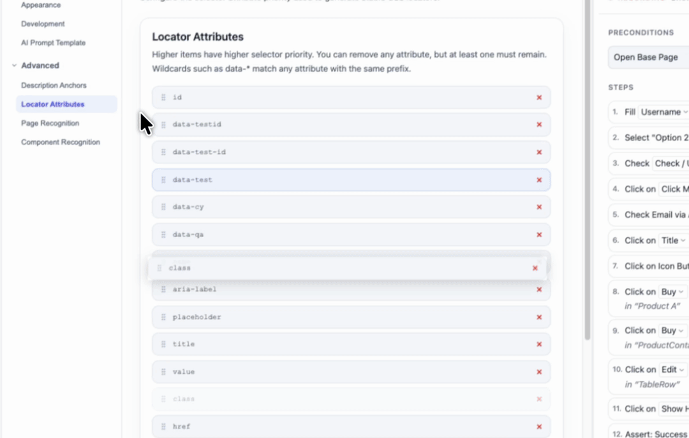
Semantic Extraction Rules & Relational Context
In Settings, drag attributes up or down to set priority (e.g. data-testid, id, name). If an element lacks unique attributes, the algorithm binds to neighboring sibling elements, direct parents, and ancestor chains.
All Settings at a Glance
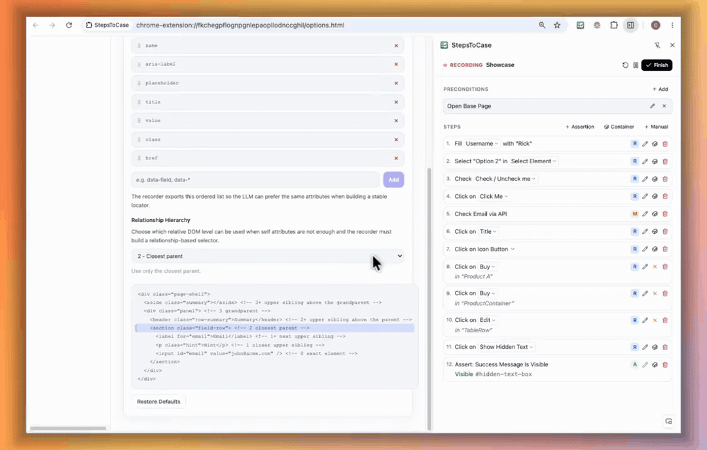
- Locator Attributes: the priority list above. Wildcards like
data-*match any attribute with that prefix. Built-in entries can be reordered but not removed. - Description Anchors: which text sources name a step:
innerText,aria-label,placeholder,value,titleand so on, in priority order. - Description & Locator Hierarchy: how far around the element the tool looks:
0exact element,1closest upper sibling,1+all upper siblings,2closest parent,2+parents and their upper siblings,3grandparent,3+grandparent and higher. - AI Prompt Template: edit the prompt used on the export screen.
- Page Recognition / Component Recognition: CSS selector + tag rules (see below).
- Appearance: dark theme and font size (small, medium, large).
- Debug Mode: shows extra details, such as how many requests each step triggered and the selector score log in the page console.
Page Recognition & Component Tags Demo
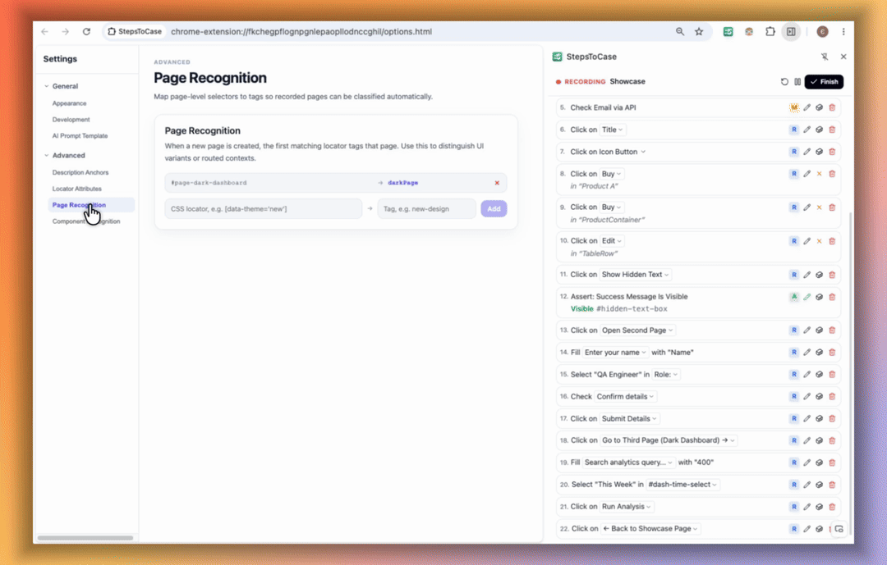
Page and Component Recognition
- Page Recognition (A/B Testing): Assign unique tags and CSS locators to different page design variants. CSS means Cascading Style Sheets. This is the code that controls visual styles on a web page.
- Component Recognition for POM: POM means Page Object Model. This is a design pattern where each page is an independent code class. Assign unique locator tags to reusable components (like navigation bars or modals). During code generation, component methods move into a dedicated Component class.
Under the Hood: Locator Scoring Algorithm
The algorithm scores every possible selector. Lower scores are better.
| Strategy Type | Description | Base Score |
|---|---|---|
| Custom Attributes | Attributes from the Locator Attributes list (like data-testid). Scored by position: 1st = 1, 2nd = 6, 3rd = 11, and so on. |
1 - 50 |
| Semantic Identifiers | Accessible role, label text, or unique visible words. | 50+ |
| Sibling Anchor | A neighboring element that has a unique ID. | 65 |
| Parent Scoped | The direct parent container has a unique attribute. | 70 |
| Deep Ancestors | Ancestor elements higher in the tree (+8 points per level). | 70 - 94 |
| Structural Fallback | Absolute paths or nth-child selectors (last choice). |
85 - 95 |
Penalty Table
| Penalty Reason | Description | Added Points |
|---|---|---|
| Not Unique | Selector matches more than one visible element. Instantly rejected. | +1000 |
| Positional Brittleness | Uses nth-child or nth-of-type (breaks when lists change). |
+15 |
| Deep Chains | Long CSS chains (like div > ul > li > span > a). |
+3 / level |
| Long Selectors | Selectors longer than 40 characters. | +2 / 20 chars |
7. Налаштування та Алгоритми локаторів
Відеодемонстрація: Пріоритети атрибутів та зв'язки елементів
Правила збору атрибутів та контекст
У налаштуваннях можна перетягувати атрибути вгору або вниз (наприклад, поставити data-testid першим). Якщо сам елемент не має сильних атрибутів, система прив'язується до сусідніх блоків (siblings) або найближчих батьківських елементів.
Усі налаштування коротко
- Locator Attributes: список пріоритетів вище. Шаблони на кшталт
data-*підходять до будь-якого атрибута з цим префіксом. Вбудовані пункти можна переставляти, але не видаляти. - Description Anchors: з яких джерел тексту береться назва кроку:
innerText,aria-label,placeholder,value,titleтощо, у порядку пріоритету. - Description & Locator Hierarchy: наскільки далеко навколо елемента шукати:
0сам елемент,1найближчий верхній сусід,1+усі верхні сусіди,2найближчий батько,2+батьки та їхні верхні сусіди,3прабатько,3+прабатько і вище. - AI Prompt Template: редагування промпту для екрану експорту.
- Page Recognition / Component Recognition: правила «CSS-селектор + тег» (див. нижче).
- Appearance: темна тема та розмір шрифту (small, medium, large).
- Debug Mode: показує додаткові деталі, наприклад кількість запитів на кожному кроці та журнал оцінок селекторів у консолі сторінки.
Відеодемонстрація: Розпізнавання сторінок та компонентів
Сторінки та Компоненти
- Розпізнавання сторінок (A/B тестування): Задавайте унікальні теги та CSS-локатори для різних варіантів дизайну однієї сторінки.
- Розпізнавання компонентів для POM: POM (Page Object Model) — це шаблон розробки, де кожна сторінка має окремий клас у коді. Задавайте теги для повторюваних частин (наприклад, шапка сайту або модальне вікно). Під час генерації коду їхні методи винесуться в окремі класи компонентів.
Під капотом: Алгоритм оцінки локаторів
Алгоритм вираховує бал для кожного можливого CSS-селектора. Чим менший бал, тим надійніший локатор.
| Тип стратегії | Опис | Базовий бал |
|---|---|---|
| Спеціальні атрибути | Атрибути зі списку Locator Attributes (наприклад, data-testid). Бал за позицією: 1-й = 1, 2-й = 6, 3-й = 11 і так далі. |
1 - 50 |
| Семантичні ідентифікатори | Роль елемента, доступна назва чи унікальний видимий текст. | 50+ |
| Сусідній якір | Сусідній елемент у дереві, який має унікальний ID. | 65 |
| Батьківський контейнер | Безпосередній батьківський блок має унікальний атрибут. | 70 |
| Глибокі предки | Елементи вище по дереву (+8 балів за кожен рівень глибини). | 70 - 94 |
| Структурні варіанти | Абсолютні шляхи або селектори nth-child (останній вибір). |
85 - 95 |
Таблиця штрафів
| Причина штрафу | Чому це погано | Штрафні бали |
|---|---|---|
| Не унікальний | Знаходить більше одного елемента на екрані. Одразу відхиляється. | +1000 |
| Позиційна крихкість | Використовує nth-child (ламається при додаванні нових рядків). |
+15 |
| Довгі ланцюжки | Довгі зв'язки на зразок div > ul > li > span > a. |
+3 / рівень |
| Довгі селектори | Селектори довші за 40 символів. | +2 / 20 символів |
8. Privacy & Troubleshooting
Privacy & Permissions
- Recordings and settings are stored only in
chrome.storage.local. Nothing is transmitted. Password values are masked. - The extension asks for access to all sites because you can test any site: staging, internal, local or production. It stays idle until you start a recording, and only the recorded tab (and tabs it opens) is captured.
- To delete data, use Reset in the panel or uninstall the extension.
Troubleshooting
| Problem | What to do |
|---|---|
| "Open … in the browser first" | A container or element must come from the step's own page. Open that page, then pick again. |
| Nothing is recorded | Check that recording is not paused and that you are acting in the recorded tab (or a tab it opened). |
| Wrong or duplicate element in the export | Add a container to the step, or move data-testid (or your team's test attribute) higher in Locator Attributes. |
| Step names are unclear | Pick a better suggestion in the Description Picker, or tune Description Anchors and Hierarchy in Settings. |
8. Приватність та вирішення проблем
Приватність та дозволи
- Записи та налаштування зберігаються лише в
chrome.storage.local. Нічого не передається. Паролі маскуються. - Розширення просить доступ до всіх сайтів, бо тестувати можна будь-який сайт: staging, внутрішній, локальний чи production. Воно неактивне, доки ви не почнете запис, і записує лише записувану вкладку (та вкладки, відкриті з неї).
- Щоб видалити дані, натисніть Reset у панелі або видаліть розширення.
Вирішення проблем
| Проблема | Що робити |
|---|---|
| «Open … in the browser first» | Контейнер чи елемент має бути зі сторінки цього кроку. Відкрийте цю сторінку і виберіть знову. |
| Нічого не записується | Перевірте, що запис не на паузі і ви працюєте в записуваній вкладці (або відкритій з неї). |
| Неправильний або дубльований елемент в експорті | Додайте до кроку контейнер або підніміть data-testid (чи тестовий атрибут вашої команди) вище в Locator Attributes. |
| Незрозумілі назви кроків | Виберіть кращий варіант у Description Picker або налаштуйте Description Anchors та Hierarchy. |